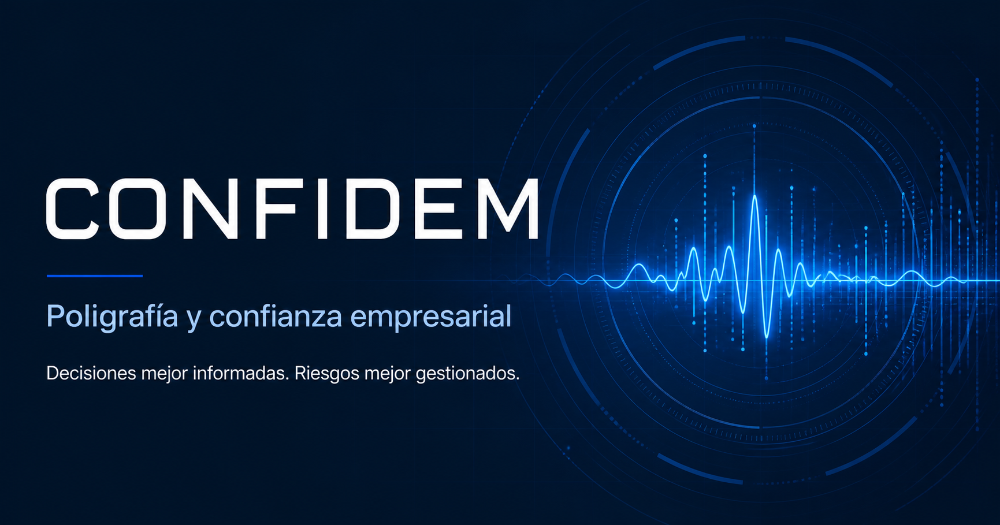

Evaluación de preempleo
Identifique factores de riesgo antes de integrar personal a puestos sensibles, con acceso a efectivo, inventarios o información confidencial.
Solicitar información →Poligrafía y confiabilidad empresarial
Evaluaciones poligráficas y estudios especializados para respaldar decisiones de contratación, permanencia, promoción e investigación interna.
Decisiones con mayor certeza
Confidem ayuda a las empresas a reducir riesgos humanos y operativos mediante evaluaciones profesionales, procesos claros y manejo estrictamente confidencial de la información.
Nuestro trabajo complementa sus procesos de selección, control interno e investigación con elementos técnicos que ayudan a tomar decisiones mejor informadas.
Conozca nuestro proceso →
Soluciones especializadas
Desde una nueva contratación hasta una investigación interna, cada servicio parte del contexto y los objetivos de su empresa.
Identifique factores de riesgo antes de integrar personal a puestos sensibles, con acceso a efectivo, inventarios o información confidencial.
Solicitar información →Fortalezca controles internos y procesos preventivos mediante evaluaciones periódicas para personal activo y posiciones de confianza.
Solicitar información →Obtenga información adicional antes de asignar mayores responsabilidades, accesos críticos o funciones estratégicas.
Solicitar información →Apoye el esclarecimiento de robos, fraudes, pérdidas, fugas de información o conductas que afectan a la organización.
Solicitar información →¿No sabe qué evaluación necesita?
Hable con un especialista →Cuándo actuar
Una evaluación de confiabilidad puede aportar información relevante cuando su organización enfrenta:
Cómo trabajamos
Acompañamos a su empresa desde la definición del objetivo hasta la entrega del reporte al contacto autorizado.
Entendemos el contexto y objetivo.
Coordinamos fecha y modalidad.
Aplicamos el procedimiento profesional.
Interpretamos la información obtenida.
Entregamos resultados confidenciales.
Experiencia multisectorial
Preguntas frecuentes
Si necesita revisar un caso particular, nuestro equipo puede orientarle de forma confidencial.
La duración varía según el objetivo y contexto. Al programarla se indicará el tiempo estimado.
Sí. Los resultados se entregan únicamente al contacto autorizado por la empresa.
Sí. Confidem ofrece cobertura en toda la República Mexicana.
Sí, sujeto a condiciones técnicas y de privacidad adecuadas.
Contacto confidencial
Un especialista le ayudará a definir el servicio y el siguiente paso.